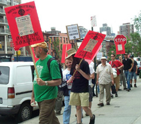

Submitted on Wed, 11/01/2006 - 2:36pm
 Resolution on the IWW Starbucks Workers UnionPassed, October 30, 2006, at the TAA General Membership Meeting, Madison, WI
Resolution on the IWW Starbucks Workers UnionPassed, October 30, 2006, at the TAA General Membership Meeting, Madison, WI
WHEREAS Starbucks baristas have built an organizational presence at seven Starbucks Coffee locations in New York City and Chicago; and
WHEREAS the Starbucks Coffee Company has maintained a virulent practice of illegal, unjust, and anti-union campaigning, resulting in an order of the National Labor Relations Board that Starbucks reinstate workers who were unlawfully fired and cease and desist from interfering with workers’ rights to organize; and
WHEREAS Starbucks has continued to interfere with its workers’ rights, by firing four more workers in New York City for protected, legal union activity; therefore be it
Submitted on Mon, 10/30/2006 - 7:39pm
Laboral / Economía
Sevilla 14/10/2006 Reparto de prensa
CNT convoca huelga indefinida en el reparto de prensa a subscriptores de Sevilla Se verán afectados los periódicos de pago de Sevilla y provincia
Rotas esta semana las negociaciones que comenzaron hace seis meses entre trabajadores y empresa, CNT convoca para el viernes huelga indefinida donde demandan el cumplimiento del 80% de los artículos recogidos en el convenio.
CNT-AIT, único sindicato en la empresa, anuncia el inicio de la huelga indefinida en Disprensur S.L.U., la entidad encargada de llevar los periódicos a la dirección de los subscriptores a estos medios. Salvo que la empresa "atienda a razones" la huelga comienza el próximo viernes.
Los empleados denuncian jornadas diarias hasta de doce horas de trabajo, donde incluso, como ejemplo, llegan a prolongar la jornada desde la noche hasta la una de la tarde para cumplir esas doce horas. Incumplimiento que desencadena en incumplir las horas previstas en el descanso entre jornada y jornada.
Submitted on Mon, 10/30/2006 - 5:16pm
 Le 30 Septembre 2006 - Au gouvernement fédéral du Mexique
Le 30 Septembre 2006 - Au gouvernement fédéral du Mexique
L’Union nationale des travailleurs de l’éducation – section 22 (Syndicat national des travailleurs de l’Éducation – Coordination nationale des travailleurs de l’Éducation SNTE-CNTE),
l’Assemblée populaire du peuple de Oaxaca (Asambleas Populares del Pueblo de Oaxaca), et le peuple de Oaxaca.
Submitted on Fri, 10/27/2006 - 9:32pm
New York, NY- Holding picket signs and handing out Howard Schultz “Most Wanted” flyers, union baristas and supporters protested the visit of the Starbucks Chairman to promote the coffee chain's first bookselling venture. Two campaign supporters entered the Park Avenue store where one of 25 promotional events around the country took place and unfurled a "Stop Union-Busting" banner. The two campaigners were forcibly removed by a Starbucks Regional Director. The baristas crashed the event to demand an end to the relentless anti-union campaign overseen by Starbucks Chairman Howard Schultz who opted not to attend.
“Four IWW members are currently out of a job because of Howard Schultz’s animosity towards unions,” said Isis Saenz, a New York barista and IWW member. “Schultz is a billionaire and just made the list of the world’s richest people. What more does he want?”
While Starbucks is set to profit handsomely from its expansion into bookselling, baristas continue to languish in poverty with fluctuating work hours each week. Starbucks has fallen far short of the socially responsible image it seeks to create. Despite referring to itself as a leader in employee health care, the coffee giant insures a lower percentage of its workforce than Wal-Mart.
Starbucks has waged a fierce anti-union campaign against baristas joining the Industrial Workers of the World to gain an independent voice at work. The company agreed to refrain from spying, bribing, threatening, and terminating workers in a March settlement with the U.S. government triggered by charges from the IWW Starbucks Workers Union [www.StarbucksUnion.org]. However, Starbucks has continued union-busting with impunity including terminating workers for exercising their right to join the union.
Despite the unlawful anti-union campaign, baristas have won wage increases, more secure scheduling, and safety improvements through direct action on the job and in the community. The union currently has an organized presence at seven Starbucks locations in New York City and Chicago.
Submitted on Fri, 10/27/2006 - 9:08pm
 Oxfam revealed today that Starbucks has been working to block Ethiopian coffee farmers from asserting the right to their own cultural heritage. Ethiopia is seeking to control its own coffee names- Sidamo, Harar, and Yirgacheffe- against Starbucks' opposition. The company's maneuvering is depriving Ethiopian coffee farmers of tens of millions of dollars a year in much needed revenue.
Oxfam revealed today that Starbucks has been working to block Ethiopian coffee farmers from asserting the right to their own cultural heritage. Ethiopia is seeking to control its own coffee names- Sidamo, Harar, and Yirgacheffe- against Starbucks' opposition. The company's maneuvering is depriving Ethiopian coffee farmers of tens of millions of dollars a year in much needed revenue.
The revelation is further evidence that Starbucks' socially-responsible claims regarding coffee farmers and baristas is nothing but spin.
Visit the Starbucks campaign homepage at Oxfam's website: here
Take a stand with workers across the Starbucks supply chain with the Justice from Bean to Cup!